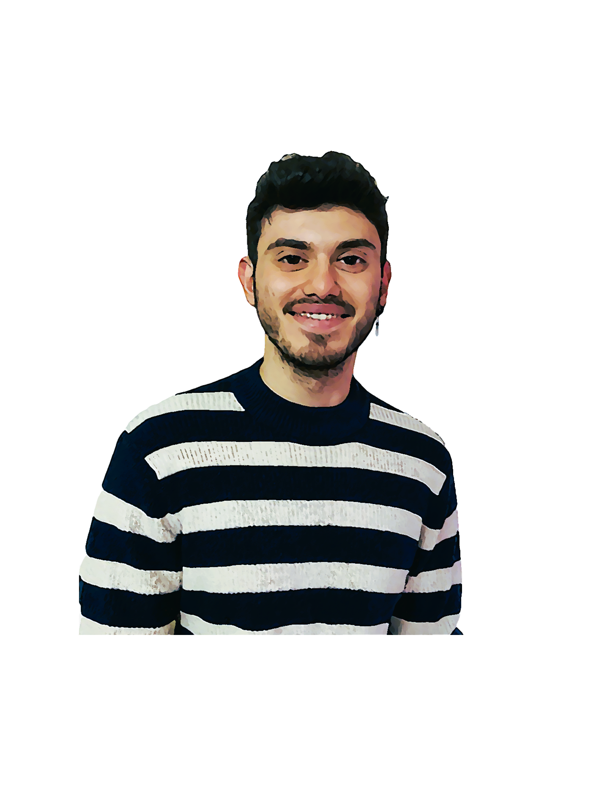

My name is Ugur Kolbasi. I have recently finished my master degree at Griffith Collage in Computer Science. My background is Industrial Engineering. Now, I am looking for my first full-time job. I have been improving my computer skills such as 3d modelling, Html, CSS and JavaScript as well as working as freelancer. I also have experience as engineer in Project Planning, Operation Research, Cost Analysis. I have great understanding of business models and production system, my aim is combining these tools with IT related fields. I am really open to learning new skills and improving myself not only career-wise and gaining personal experiences. The world is changing rapidly, and I don’t have much professional experience, but I am willing to take the necessary steps to achieve my goals and accomplish impeccable experience in this growing industry. I can provide a fresh take and an extraordinary approach to every project. I am open to challenges and constructive feedback. I am open-minded and eager to become a team player and dedicate my skills and talents to developing unique and high-quality products.

Portofilio
